Insights
Latest articles.
Practical insights on FinOps, cloud and AI costs.

AI
Scaling AI beyond the pilot: the real business case
FinOps
Resource tagging: the foundation of FinOps
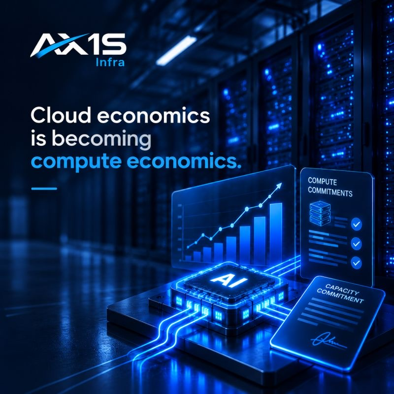
AI
Cloud economics is becoming compute economics

Governance
Nobody feels they own the cloud bill

FinOps
A FinOps tool is not FinOps
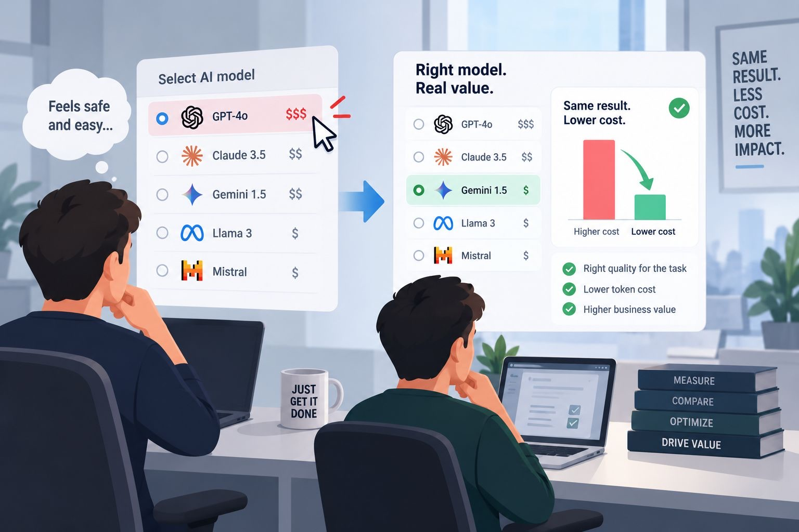
AI
Over-modeling: you rarely need the priciest AI model
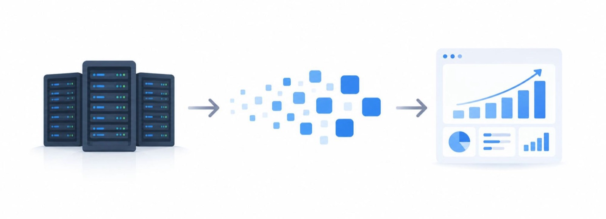
AI
AI tokenomics explained: more value per token
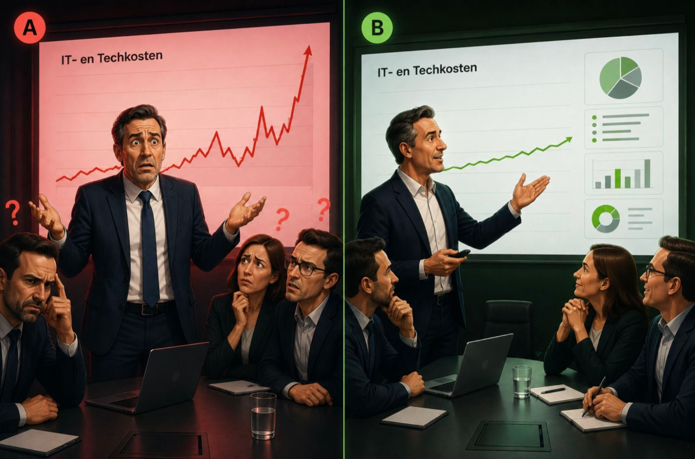
FinOps
Explaining cloud and AI costs in the boardroom
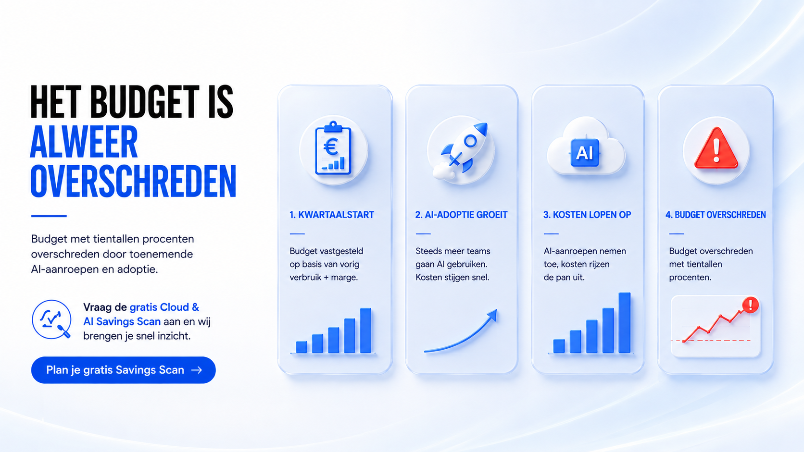
FinOps
Oh no, the budget has been exceeded again

AI
Wait, is this investment still profitable?

AI
This AI project looked cheap, until the bill arrived

Cloud
Oh no, nobody ever checked this cost item

Cloud
3 steps to find waste in the cloud
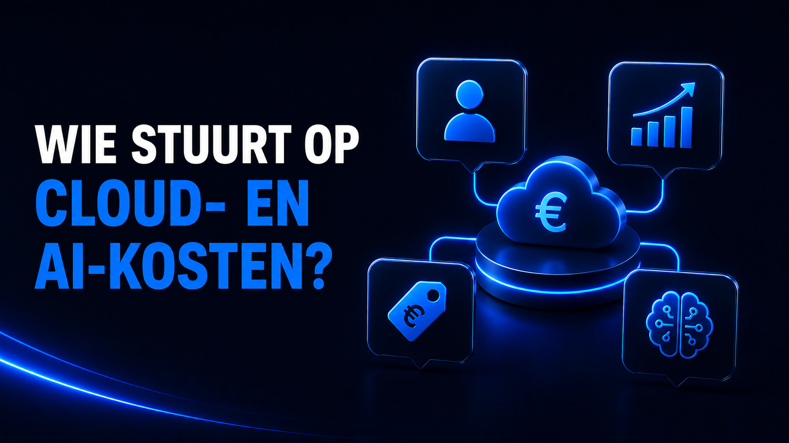
Governance
Who steers cloud and AI costs?
FinOps
5 steps to a predictable cloud budget
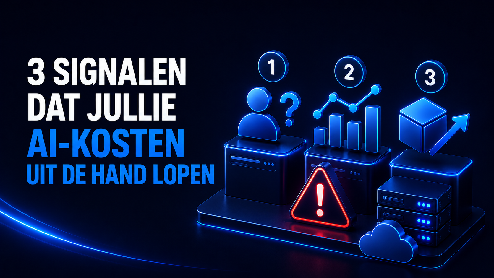
AI
3 signs your AI costs are getting out of hand

Cloud
5 costly mistakes that make your public cloud needlessly expensive
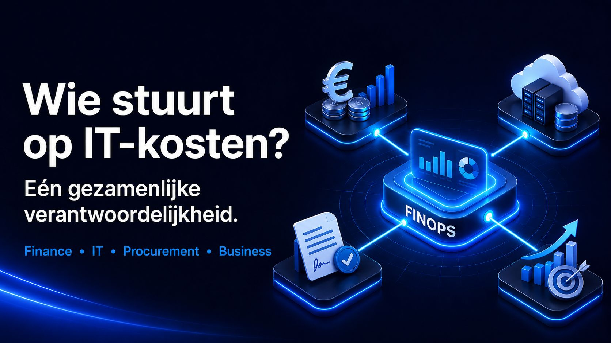
Governance
Wait a moment... who actually steers our IT costs?
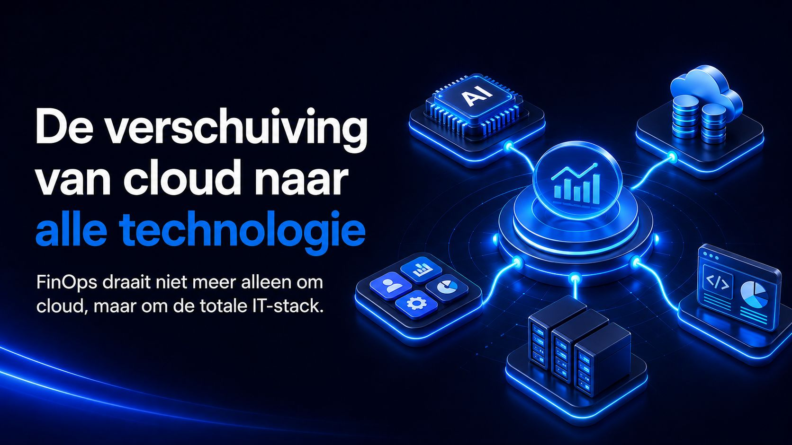
FinOps
The shift from cloud to all technology
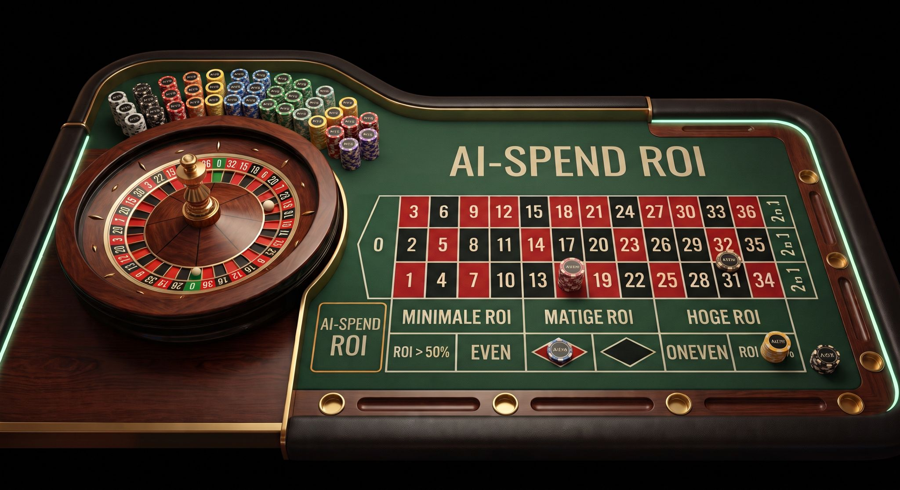
AI
The trillion-dollar casino: tracking AI costs, but no view on ROI
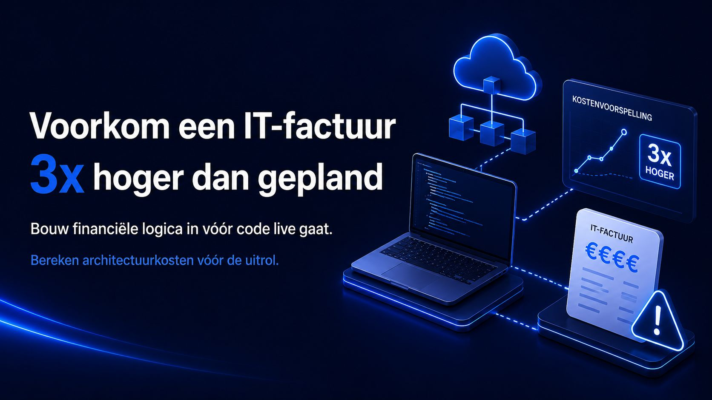
FinOps
How to prevent an IT bill that comes in 3x higher than planned

AI
AI budget exceeded? You're not the only one
FAQ
Frequently asked questions about cloud costs and FinOps
FinOps
5 ways to eliminate unnecessary cloud costs
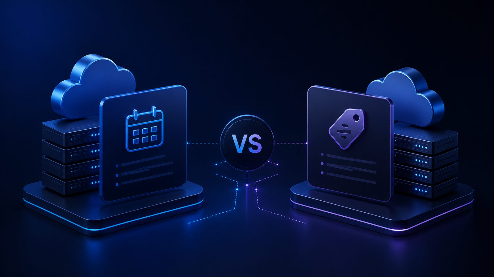
Cloud
Reserved Instances vs. Savings Plans

FinOps
The FinOps maturity model
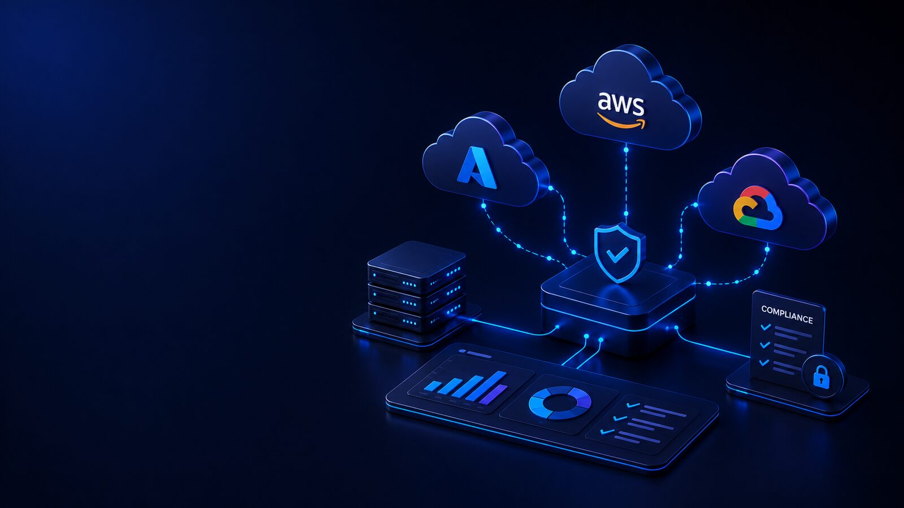
Governance
Multi-cloud governance without the complexity

Customer case